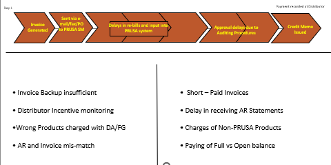
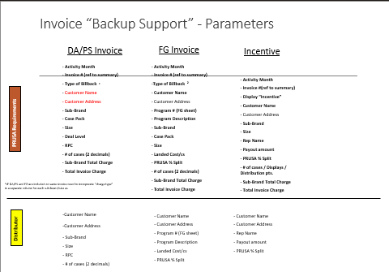
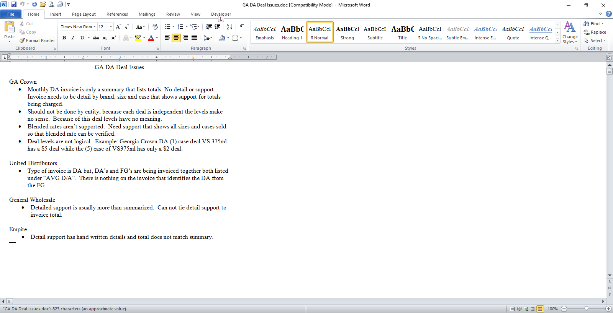
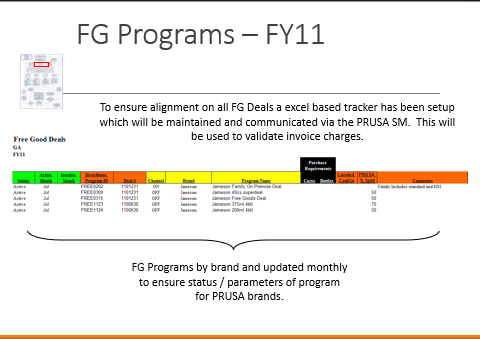
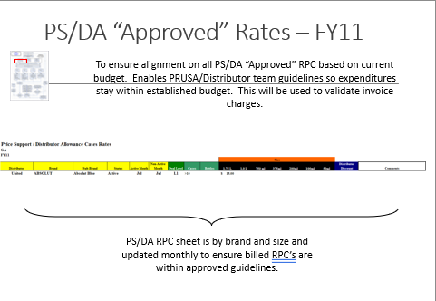
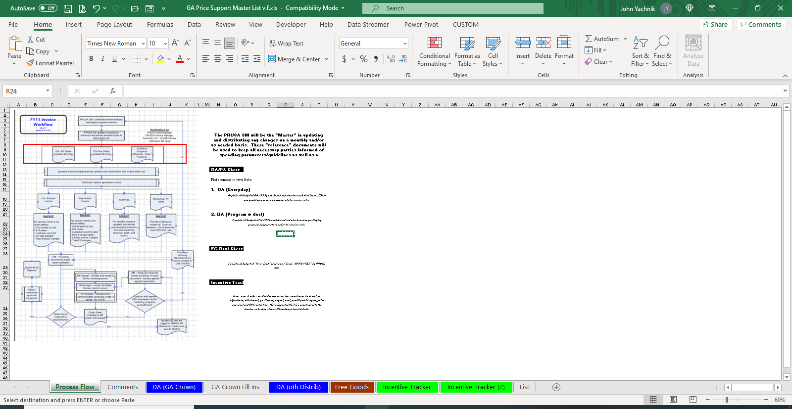

Process / Workflow Development
Invoice Process Re-engineering
 Pernod Ricard USA
Pernod Ricard USA





- Following an internal audit we found discrepancies in the process of invoices.
- To understand and conduct a current "As Is" state with all issues.
- Developed a "To Be" process addressing all issues, streamlining and automating the process so the information is sent electronically.
- Incorporated a NEW automated process which improved backup sufficiency, improved distributor incentive monitoring, correct products being charged, a correct match between invoice and AR, improved timing of receiving proper documentation, eliminating charges of non-PRUSA product, and payment of full invoice instead of having an open balance. Savings of $200K.